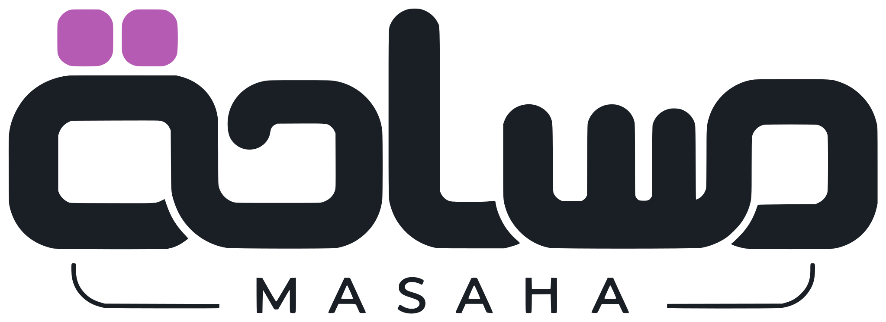
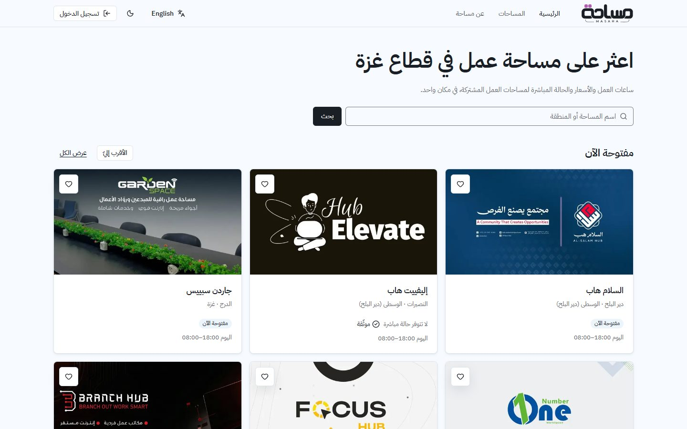
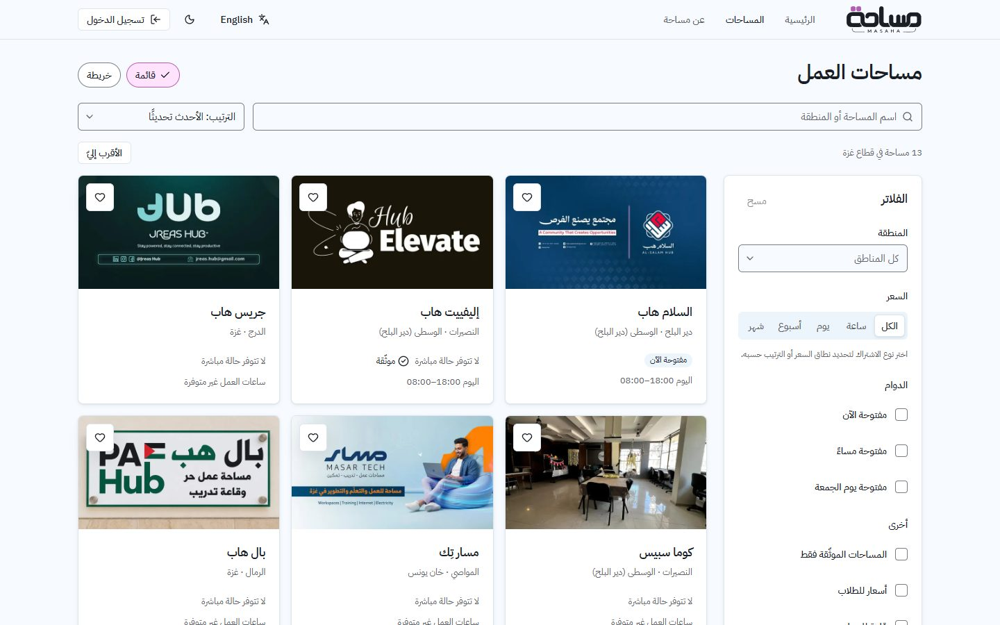
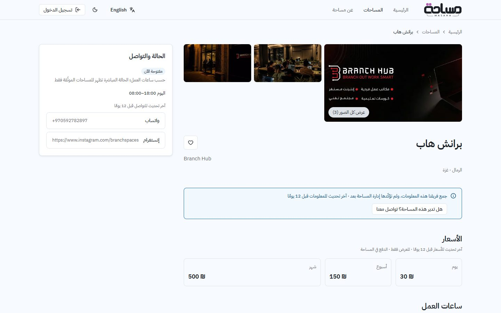
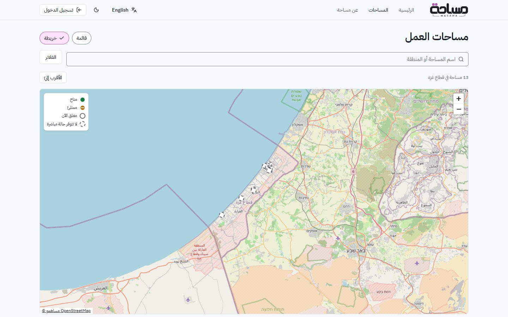

الموقع اليوم صحيح ونظيف، لكنه بلا شخصية: كل شيء بطاقة بيضاء بزوايا مدوّرة، والخط صغير ومتساوٍ، ولون التوت لا يؤدي عمله. هذه ثلاث إجابات مختلفة عن سؤال واحد: ما الذي يحتاجه من يبحث عن مكان يعمل فيه اليوم في غزة، وكيف يجب أن يبدو؟ الألوان والشعار ثابتان في الثلاثة.



